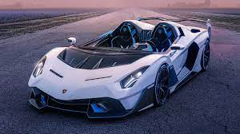

TAKE THE ROUGH ROAD WITH OUR SMOOTH CAR.
Automobili Lamborghini S.p.A. is an Italian brand and manufacturer of luxury sports cars and SUVs based in Sant'Agata Bolognese. The company is owned by the Volkswagen Group through its subsidiary Audi.

The leather wrapped steering wheel mounted controls of the Lamborghini Aventador contains a phone and an audio system. Furthermore, the power steering of the Aventador has the feature of speed proportion which means unrivalled road stability and control. Additionally, the audio system has iPhone/iPod integration, voice activated navigation and hands-free capabilities. The audio system has an auxiliary audio input or MP3 and Bluetooth and USB compatibilities. Furthermore, the navigation system has voice recognition and a digital odometer. The in-dash CD player has a single disc and the total number of speakers is 4. The audio system has an AM/FM radio as well. Like the Koenigsegg Agera, the Lamborghini Aventador has paddle shifters. Several small digital gauges can be spotted on the steering wheel mounted controls. The vehicle metrics on the steering wheel mounted controls provide information about oil and water temperature, fuel pressure and speed.
